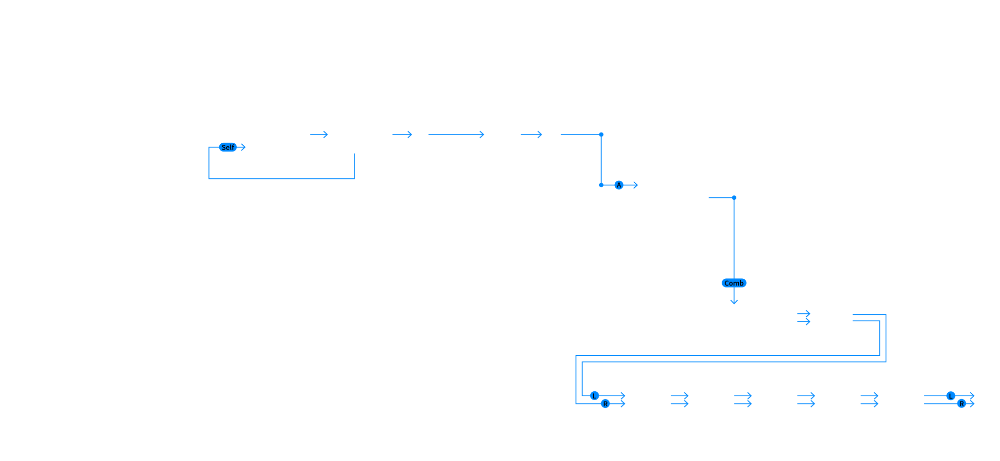
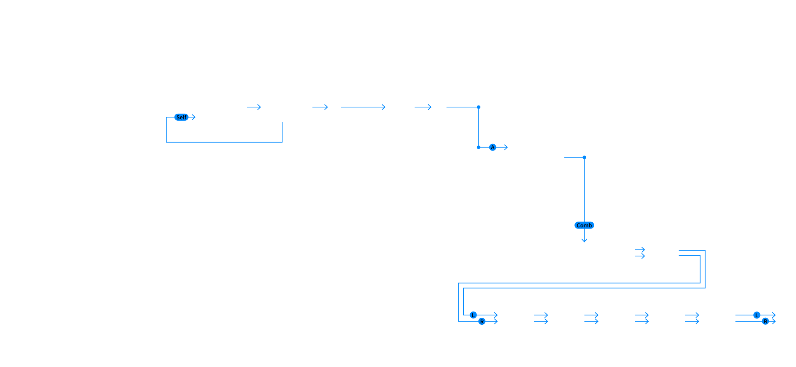

Envelopes
The two ADBDSR envelopes A and B are the control sources for:
- the output amplitude of the Oscillator-Shaper branch
- the Oscillators' phase modulation depths
- the Drive (input gain) of the corresponding Shaper
There is detailed control of how the velocities and the key position influence levels and times.
The third ADBDSR envelope has bipolar Breakpoint and Sustain levels. It can modulate:
- the pitches and fluctuations of Oscillator A and B
- the feedback signal
- parameters of the Comb Filter and the State Variable Filter
Oscillator Group
The two sine wave oscillators are the only signal sources. With a random frequency fluctuation they can also produce tunable noise. They are equipped with three phase modulation inputs for:
- self modulation
- modulation from the other oscillator
- modulation from the feedback (FB) signal
Shaper Group
The signal of each oscillator is processed by a wave shaper. The shaping curve is a sine function with adjustable foldback and asymmetry. The mix amounts of the shaper signal can be adjusted individually for each phase modulation branch and for the output.
The Shaper block also contains mixing points for the feedback signal and the result of a ring modulation between the output signals of the branches A and B.
Comb Filter
The Comb Filter contains:
- a precisely tunable delay (Pitch)
- a second-order Allpass filter
- a control for the Decay time of the impulse response
- a lowpass (Hi Cut) in the feedback loop
- a delay modulation by the Oscillator signals, similar to phase modulation (PM)
State Variable Filter
The State Variable Filter has a variable 4-pole structure with:
- two internal 2-pole filters with splittable cutoff frequencies (Spread)
- crossfade between serial and parallel modes
- crossfade between lowpass, bandpass, and highpass mode
- cutoff frequency modulation (FM) by the Oscillator signals
Feedback Mixer
This mixer combines the following signals for the feedback bus: the outputs of the Comb Filter and the State Variable Filter and the output of the effects chain, with separately adjustable amount of Reverb. It includes a sine shaper for the sum signal.
The feedback bus signal (FB) can be used for the phase modulation of the Oscillators and it can be injected into the signal path of the Shapers for direct audio feedback.
Output Mixer
The Output Mixer creates a stereo sum of the signals from Oscillator/Shaper A and B, the Comb Filter and the State Variable Filter. It includes a sine shaper for the sum signal of each voice.
Flanger
A modulation delay and a 4-pole allpass creating a wide range of chorus, flanger and phaser effects .
Cabinet
A distortion unit (sine shaper) with pre and post filtering that can sound simular to a guitar amp driving a speaker.
Gap Filter
A 4-pole lowpass and a 4-pole highpass in a parallel or serial structure, creating a flexible band-rejection or band-pass filter.
Echo
A stereo delay effect.
Reverb
A room and hall simulation.
 
